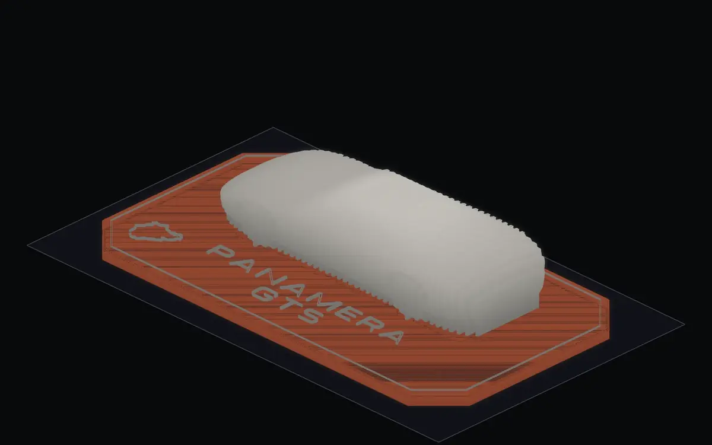
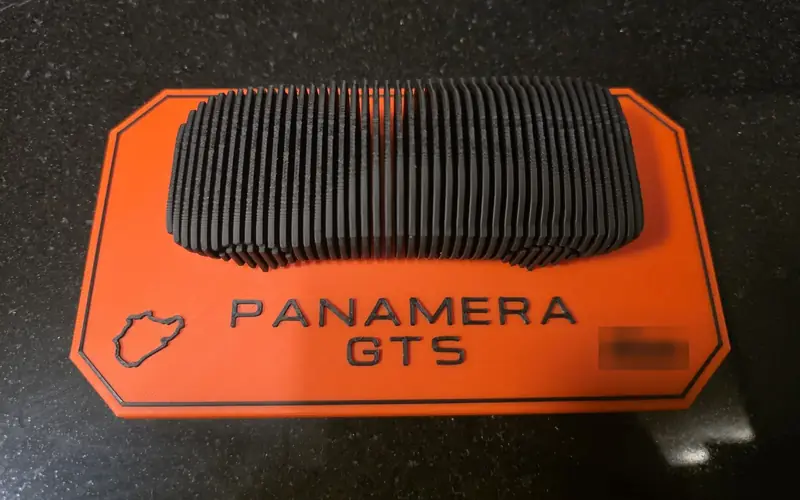
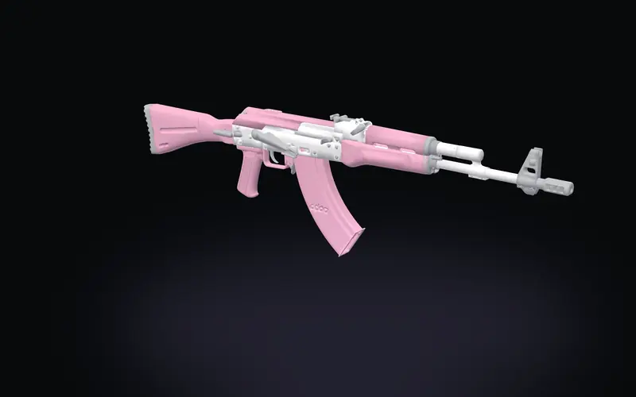

01 Hello
Abdallah El Belkasy
I make slow systems fast.
Open to Rust, systems, backend. Remote, or relocation with a visa.
Now: Odoo PSAE.
- E-Jam2 h+ to about 10 minmanual test cycle to automated
- PolyBall40 MB to 1.5 MBfont payload
- PolyBall178 countriesreached (Play closed test)
Center Point
02 E-Jam, the test bench
A network-switch test bench. 2 h+ of manual testing to about 10 minutes.
Stack and method
- Rust control plane, Kafka, Flutter client, C++ generator and verifier.
- Throughput by binary search on rate, latency and frame loss over repeated trials, methodology from RFC 2544 and 2889.
- Team of five developers. Top contributor by commits.
03 PolyBall, the game
PolyBall. A rhythm game I built alone in Godot 4, published on itch.io, in closed testing on Google Play.
- 178 countriesreached (Play closed test)
- 40 MB to 1.5 MBfont payload
Play on itch Leaderboard and cup champions Trailer The silent web build
0 on the beat
04 Contact
Hiring for Rust, systems or backend?
abdallahemohmad2002Open to Rust, systems, backend. Remote, or relocation with a visa.
Hand-written HTML and CSS. No framework, no trackers.
05 Off the bed
Off the bed. Two builds, failures written down.
- The Panamera was a gift.
- The AKR is a life-size toy prop printed part by part, its sling clip redesigned after a failed test.
Files released CC BY-NC-SA 4.0, base meshes credited to their designers.



parts in print
06 AbdA
AbdA for short.
- Based in
- Dubai, UTC+4
- Time there
- --:--
- Engineering
- Rust, systems, backend
- After hours
- Music production
Path, newest first
- Odoo PSAE (now)
- National service
- E-Jam
- Cairo University
- Banque Misr internship
- ICPC
The beat under this ring is the same 120 BPM as the home page's traffic figure and status bar.